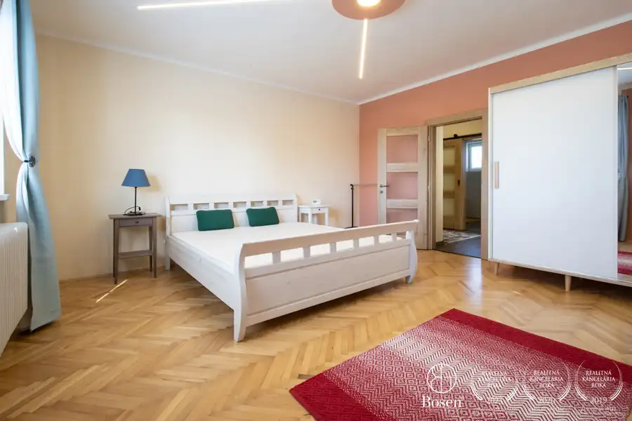
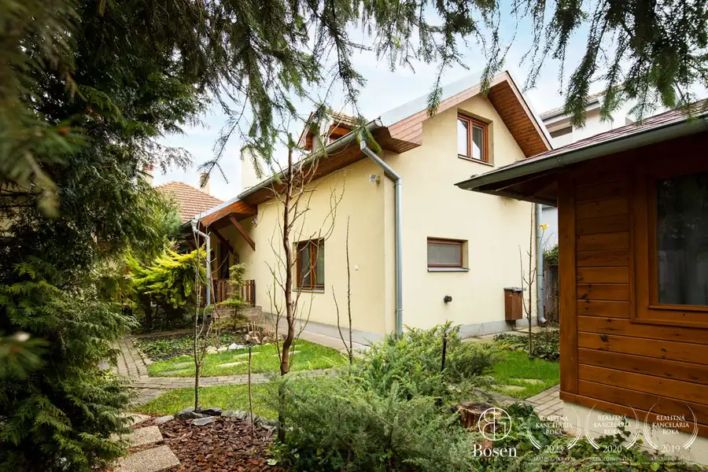
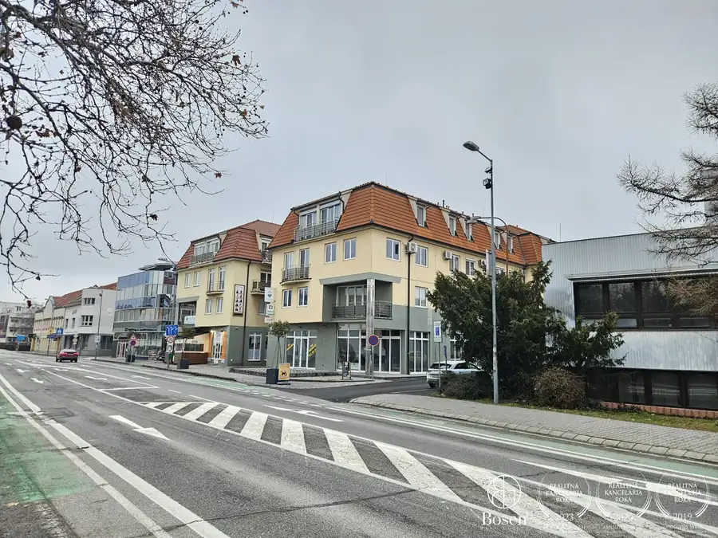

BOSEN | Na prenájom obchodný priestor 350 m2 v centre, Veľký Meder
Veľký Meder
- Plocha350 m²
- StavČiastočná rekonštrukcia
- VlastníctvoOsobné
O nehnuteľnosti
Bosen Group Vám ponúka na prenájom priestranný nebytový priestor s celkovou výmerou 350 m2 vo frekventovanej lokalite mesta Veľký Meder. Objekt ponúka výbornú viditeľnosť z hlavnej ulice, široké možnosti využitia na obchod, služby či administratívu a bezproblémové zásobovanie z oboch strán.PRIESTORNebytový priestor sa nachádza v samostatnom objekte pozostávajúcom z troch podlaží s celkovou výmerou 350 m2.Suterén o výmere 140 m2 pozostáva z dvoch otvorených priestorov, samostatnej toalety, dvoch schodísk a nákladného výťahu. Priestor je ideálny na skladovanie aj ťažšieho tovaru.Prízemie o výmere 140 m2 disponuje veľkými výkladovými sklami vhodnými na reklamu a prezentáciu prevádzky. Nachádza sa tu samostatná toaleta, nákladný výťah a schodisko do suterénu aj na poschodie.Poschodie o výmere 70 m2 je vhodné na kancelárske využitie. Nachádzajú sa tu dve samostatné miestnosti s výmerami 40 m2 a 18 m2 a toaleta.DISPOZÍCIANa prízemie vedú dva samostatné vstupy. Hlavný vstup je priamo z ulice s možnosťou parkovania pred objektom. Druhý vstup je zásobovací zo zadnej časti objektu, vybavený rampou, širšími dverami a posuvnou mrežou. Zásobovanie je možné z prednej aj zadnej strany.Objekt sa prioritne prenajíma ako celok. Po vzájomnej dohode je možné dispozične upraviť jednotlivé časti na menšie priestory vhodné ako kancelárie, predajne alebo samostatné prevádzky.ZARIADENIEPriestor sa prenajíma nezariadený. V prípade potreby je možné ponechať zariadenie jednej kancelárie na poschodí.Vykurovanie je zabezpečené plynovým kotlom formou podlahového kúrenia aj radiátorov. Klimatizácia sa nachádza na prízemí aj na poschodí. Internetové pripojenie je riešené optickým káblom.PARKOVANIEJedno vyhradené parkovacie miesto sa nachádza vo dvore za objektom. Parkovanie je možné aj pred objektom a v zadnej časti pri väčšom parkovisku.LOKALITAObjekt sa nachádza vo meste Veľký Meder na frekventovanej Komárňanskej ceste s viacerými obchodmi, službami a vysokou koncentráciou pohybu zákazníkov. Lokalita ponúka výbornú dostupnosť a viditeľnosť prevádzky.V minulosti priestor úspešne fungoval ako predajňa elektroniky, čo potvrdzuje jeho vhodnosť pre obchodné využitie.CENAMesačné nájomné: 1.850 €Energie si hradí nájomca samostatne prepísaním na svoje meno.Predchádzajúce mesačné náklady: elektrina 130 € / plyn 120 € / voda 10 €Majiteľ uprednostňuje dlhodobý nájom.MAKLÉRMgr. Tomáš Miške, riaditeľ pobočky BOSEN Dunajská Stredatel.: +421 903 763 560e-mail: miske@bosen.sk
Parametre
| Druh | Obchodné priestory |
|---|---|
| Dátum zverejnenia | 27. 4. 2026 |
| Rok poslednej rekonštrukcie | 2020 |
| Rok výstavby | 1998 |
| Stav nehnuteľnosti | Čiastočná rekonštrukcia |
| Telekomunikácie | Optická sieť |
| Typ | Prenájom |
| Vlastníctvo | Osobné |
| Vybavenie | Sklad, Výťah |
| Úžitková plocha | 350 m² |
Kde to je


Mohlo by Vás zaujímať

DomNové10 350 000 €BOSEN | RD s rozlohou 300m² pri termálnom kúpalisku Dunajská Streda 300 m² POPIS NEHNUTEĽNOSTI: Bosen Group Vám ponúka na predaj priestranný rodinný dom aj pre viacčlennú rodinu alebo na podnikanie. Pozemok 1018m2DISPOZÍCIA:…
DomNové10 Cena dohodouBOSEN | Rodinný dom s predajňou, skladom a zariadeným kozmetickým salónom. Dunajská Streda 195 m² Bosen Group Vám ponúka na predaj 3i rodinný dom so širokými možnosťami využitia. RD sa nachádza na Veľkoblahovskej ulici v Dunajskej Strede, ktorá je…
BytNové10 Cena dohodouBosen | Prenájom: 2 izbový byt v tehlovom dome, 58 m2, centrum Dunajská Streda 2-izbový58 m²3. podlažie Bosen Group Vám ponúka na prenájom priestranný 2 izbový byt v tehlovom dome Panorama v úplnom centre Dunajskej Stredy. Byt sa nachádza na najvyššom…